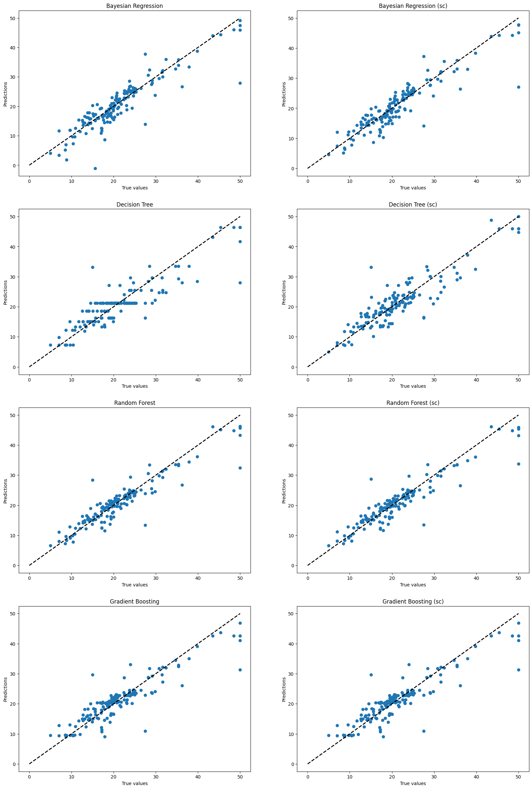

Ejercicio 1: Boston Housing#
Load data#
import mglearn
X, y = mglearn.datasets.load_extended_boston()
Preprocessing#
import pandas as pd
from sklearn.model_selection import train_test_split
X_train, X_test, y_train, y_test = train_test_split(X, y, test_size=0.3, random_state=42)
from sklearn.preprocessing import StandardScaler
scaler = StandardScaler()
X_train_sc = scaler.fit_transform(X_train)
X_test_sc = scaler.transform(X_test)
Training#
from sklearn.tree import DecisionTreeRegressor
from sklearn.ensemble import RandomForestRegressor, GradientBoostingRegressor
from sklearn.linear_model import BayesianRidge
grid_br = {
'alpha_1': [1e-6, 1e-5, 1e-4],
'alpha_2': [1e-6, 1e-5, 1e-4],
'lambda_1': [1e-6, 1e-5, 1e-4],
'lambda_2': [1e-6, 1e-5, 1e-4],
}
grid_dt = {
'max_depth': range(1, X_train.shape[1] + 1, 5),
}
grid_rf = {
'max_depth': range(1, X_train.shape[1] + 1, 5),
}
grid_gb = {
'max_depth': range(1, X_train.shape[1] + 1, 5),
}
models_name = [
"Bayesian Regression",
"Decision Tree",
"Random Forest",
"Gradient Boosting"
]
grids = [
grid_br,
grid_dt,
grid_rf,
grid_gb
]
models = [
BayesianRidge(),
DecisionTreeRegressor(random_state=42),
RandomForestRegressor(random_state=42),
GradientBoostingRegressor(random_state=42),
]
cv = 5
from sklearn.model_selection import GridSearchCV
from utils import grid_search_by_hand, model_evaluation_lr
from copy import deepcopy
import warnings
warnings.filterwarnings("ignore")
results_gs = pd.DataFrame(columns=["Model", "MAPE", "RMSE", "r2"])
results_hand = pd.DataFrame(columns=["Model", "MAPE", "RMSE", "r2"])
models_gs_sc = {}
models_gs = {}
for i, (model_name, model, grid) in enumerate(zip(models_name, models, grids)):
gs_sc = GridSearchCV(model, param_grid=grid, scoring='r2', cv=cv, n_jobs=-1)
gs = GridSearchCV(model, param_grid=grid, scoring='r2', cv=cv, n_jobs=-1)
hand_sc = grid_search_by_hand(deepcopy(model), grid, X_train_sc, y_train, cv, 'r2')
hand = grid_search_by_hand(deepcopy(model), grid, X_train, y_train, cv, 'r2')
gs_sc.fit(X_train_sc, y_train)
gs.fit(X_train, y_train)
models_gs[model_name] = gs
models_gs_sc[model_name + ' (sc)'] = gs_sc
hand_sc['best_model'].fit(X_train_sc, y_train)
hand['best_model'].fit(X_train, y_train)
eval_gs_sc = model_evaluation_lr(gs_sc, X_test_sc, y_test)
eval_gs = model_evaluation_lr(gs, X_test, y_test)
eval_hand_sc = model_evaluation_lr(hand_sc['best_model'], X_test_sc, y_test)
eval_hand = model_evaluation_lr(hand['best_model'], X_test, y_test)
results_gs.loc[2*i] = [model_name, eval_gs['mape'], eval_gs['rmse'], eval_gs['r2']]
results_gs.loc[2*i+1] = [model_name + ' (sc)', eval_gs_sc['mape'], eval_gs_sc['rmse'], eval_gs_sc['r2']]
results_hand.loc[2*i] = [model_name, eval_hand['mape'], eval_hand['rmse'], eval_hand['r2']]
results_hand.loc[2*i+1] = [model_name + ' (sc)', eval_hand_sc['mape'], eval_hand_sc['rmse'], eval_hand_sc['r2']]
results_hand = results_hand.sort_values(by='r2', ascending=False)
1%| | 1/81 [00:00<00:14, 5.40it/s]
100%|██████████| 81/81 [00:09<00:00, 8.63it/s]
100%|██████████| 81/81 [00:08<00:00, 9.59it/s]
100%|██████████| 21/21 [00:01<00:00, 15.93it/s]
100%|██████████| 21/21 [00:01<00:00, 16.25it/s]
100%|██████████| 21/21 [01:22<00:00, 3.92s/it]
100%|██████████| 21/21 [01:21<00:00, 3.87s/it]
100%|██████████| 21/21 [02:20<00:00, 6.67s/it]
100%|██████████| 21/21 [02:20<00:00, 6.67s/it]
Results#
With GridSearch#
results_gs = results_gs.sort_values(by='r2', ascending=False)
print(results_gs.to_string(index=False))
Model MAPE RMSE r2
Random Forest (sc) 0.103 3.150 0.867
Random Forest 0.103 3.177 0.865
Bayesian Regression (sc) 0.120 3.528 0.833
Decision Tree (sc) 0.137 3.723 0.814
Bayesian Regression 0.129 3.734 0.813
Gradient Boosting 0.129 3.754 0.811
Gradient Boosting (sc) 0.129 3.754 0.811
Decision Tree 0.147 4.167 0.767
By hand#
results_hand = results_gs.sort_values(by='r2', ascending=False)
print(results_hand.to_string(index=False))
Model MAPE RMSE r2
Random Forest (sc) 0.103 3.150 0.867
Random Forest 0.103 3.177 0.865
Bayesian Regression (sc) 0.120 3.528 0.833
Decision Tree (sc) 0.137 3.723 0.814
Bayesian Regression 0.129 3.734 0.813
Gradient Boosting 0.129 3.754 0.811
Gradient Boosting (sc) 0.129 3.754 0.811
Decision Tree 0.147 4.167 0.767
We obtain the same results by hand and with GridSearchCV so we only plot for GridSearchCV models
import matplotlib.pyplot as plt
fig, axs = plt.subplots(4, 2, figsize=(20, 30))
for i, model_name in enumerate(models_gs.keys()):
model = models_gs[model_name]
y_pred = model.predict(X_test)
axs[i, 0].plot([0, y_test.max()], [0, y_test.max()], 'k--', lw=2)
axs[i, 0].scatter(y_test, y_pred)
axs[i, 0].set_xlabel('True values')
axs[i, 0].set_ylabel('Predictions')
axs[i, 0].set_title(model_name)
for i, model_name in enumerate(models_gs_sc.keys()):
model = models_gs_sc[model_name]
y_pred = model.predict(X_test_sc)
axs[i, 1].plot([0, y_test.max()], [0, y_test.max()], 'k--', lw=2)
axs[i, 1].scatter(y_test, y_pred)
axs[i, 1].set_xlabel('True values')
axs[i, 1].set_ylabel('Predictions')
axs[i, 1].set_title(model_name)
plt.show()

We can notice a larger dispersion for Decision Tree and Gradient Boosting whereas Random Forest predict quite well.
Finally, we have better predictions with Random Forest so we choose this model.